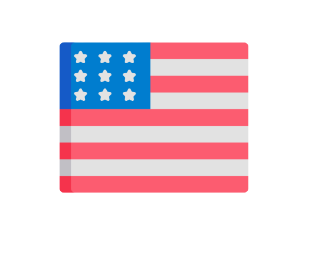

<mat-drawer-container>
  <header>
    <div class="search-bar">
      <input type="text" placeholder=" {{ 'app.homePage.search' | translate }}">
      <button>
        
      </button>

    </div>
      <div (click)="changeLanguageButton()" class="button-theme-language">
          <div *ngIf="language === 'en'" class="language-selected">
              
              {{ 'app.homePage.english' | translate}}
          </div>
          <div *ngIf="language === 'pt-br'" class="language-selected">
              
              {{ 'app.homePage.portuguese' | translate}}
          </div>
          <div *ngIf="languageListView" class="language-list-view">
              <button (click)="changeLanguage('en')">
                  
                  {{ 'app.homePage.english' | translate}}
              </button>
              <button (click)="changeLanguage('pt-br')">
                  
                  {{ 'app.homePage.portuguese' | translate}}
              </button>
          </div>
      </div>
      <div class="title">
        <span>{{ 'app.homePage.title' | translate }}</span>
      </div>
  </header>
  <app-home-page></app-home-page>
  <!-- colocar um detector de dispositivo, se for celular, mudara o MODE da drawer -->
  <mat-drawer #drawer mode="side" position="end" class="drawer">
    <app-drawer-poke [pokemonData]='pokemonData'>
    </app-drawer-poke>
  </mat-drawer>
</mat-drawer-container>
